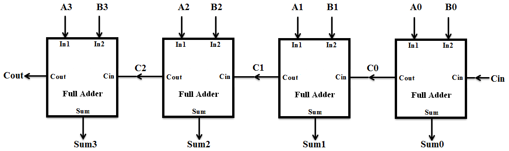

Applications and Examples
4-bit Adder
A 4-bit adder adds two 4-bit binary numbers together, producing a 4-bit sum output along with a carry-out bit that indicates an overflow if the sum exceeds the capacity of 4 bits.

Ripple Carry Adder (RCA)
module FullAdder (A, B, Ci, Co, S);
input A, B, Ci; // Inputs: A, B, and Carry In (Ci)
output S, Co; // Outputs: Sum (S) and Carry Out (Co)
assign S = A ^ B ^ Ci; // Sum calculation
assign Co = (A & B) | (B & Ci) | (A & Ci); // Carry Out calculation
endmodule
module Adder4 (S, Co, A, B, Ci);
input [3:0] A, B; // 4-bit inputs
input Ci; // Carry input
output [3:0] S; // 4-bit sum output
output Co; // Carry out
wire [3:1] C; // Internal carry signals
// Instantiate 4 Full Adders
FullAdder FA0 (A[0], B[0], Ci, C[1], S[0]);
FullAdder FA1 (A[1], B[1], C[1], C[2], S[1]);
FullAdder FA2 (A[2], B[2], C[2], C[3], S[2]);
FullAdder FA3 (A[3], B[3], C[3], Co, S[3]);
endmodule
Look-Ahead Adder (CLA)
A 4-bit carry look-ahead adder (CLA) is a faster alternative to the ripple carry adder, as it calculates the carries in parallel rather than waiting for each carry to propagate through the stages sequentially. The carry look-ahead adder computes the carry signals using the generate (G) and propagate (P) functions.
module cla_4bit (
input [3:0] A, B,
input Cin,
output [3:0] Sum,
output Cout
);
wire [3:0] G, P; // Generate and propagate signals
wire C1, C2, C3;
// Generate and propagate signals
assign G = A & B; // Generate
assign P = A | B; // Propagate
// Carry look-ahead logic
assign #5 C1 = G[0] | (P[0] & Cin);
assign #5 C2 = G[1] | (P[1] & G[0]) | (P[1] & P[0] & Cin);
assign #5 C3 = G[2] | (P[2] & G[1]) | (P[2] & P[1] & G[0]) | (P[2] & P[1] & P[0] & Cin);
assign #5 Cout = G[3] | (P[3] & G[2]) | (P[3] & P[2] & G[1]) | (P[3] & P[2] & P[1] & G[0]) | (P[3] & P[2] & P[1] & P[0] & Cin);
// Sum calculation
assign #5 Sum[0] = A[0] ^ B[0] ^ Cin;
assign #5 Sum[1] = A[1] ^ B[1] ^ C1;
assign #5 Sum[2] = A[2] ^ B[2] ^ C2;
assign #5 Sum[3] = A[3] ^ B[3] ^ C3;
endmodule
Delay Comparison: Carry Look-Ahead Adder (CLA) vs. Ripple Carry Adder (RCA)
1. Ripple Carry Adder (RCA)
- Delay Growth: Linear
O(N)(increases with the number of bits) - Total Delay:
N * Gate Delay per Full Adder
2. Carry Look-Ahead Adder (CLA)
- Delay Growth: Logarithmic
O(log N)(grows slower as the number of bits increases) - Total Delay:
log_2(N) * Gate Delay per Stage
3. Comparison of Delays
| Number of Bits | RCA Delay (Linear) | CLA Delay (Logarithmic) |
|---|---|---|
| 4 bits | 20 ns | 20 ns |
| 8 bits | 40 ns | 15 ns |
| 16 bits | 80 ns | 20 ns |
| 32 bits | 160 ns | 25 ns |
| 64 bits | 320 ns | 30 ns |
4-to-1 Mux
A 4-to-1 multiplexer selects one of four input signals based on a 2-bit selection input and forwards the selected input to the output.

module Mux4to1 (
input wire I0, I1, I2, I3, // 4 data inputs
input wire S0, S1, // 2 select lines
output wire Y // Output
);
assign Y = (~S1 & ~S0 & I0) | // Select I0 when S1 = 0, S0 = 0
(~S1 & S0 & I1) | // Select I1 when S1 = 0, S0 = 1
( S1 & ~S0 & I2) | // Select I2 when S1 = 1, S0 = 0
( S1 & S0 & I3); // Select I3 when S1 = 1, S0 = 1
endmodule
Shift Register
4-bit Left Shift
A 4-bit left shift register shifts the contents of the register one bit to the left on each clock cycle, with a new bit introduced at the least significant bit (LSB) and the most significant bit (MSB) being discarded.

module LeftShiftRegister (
input wire clk, // Clock input
input wire reset, // Reset input
input wire D_in, // Serial data input
output reg [3:0] Q // 4-bit parallel output
);
// On the positive edge of the clock, perform the left shift
always @(posedge clk or posedge reset) begin
if (reset) begin
Q <= 4'b0000; // Reset all outputs to 0
end else begin
Q <= {Q[2:0], D_in}; // Shift left and input new data bit on Q0
end
end
endmodule
8-bit Left Shift
module shift_register_8bit (
input wire SI, // Serial input
input wire Clk, // Clock signal (rising edge)
input wire EN, // Enable (active high)
output reg SO // Serial output
);
// Internal 8-bit register to hold the shift data
reg [7:0] shift_reg;
// Always block triggered on rising edge of clock
always @(posedge Clk) begin
if (EN) begin
// Shift register: shift in SI and shift out MSB (SO)
SO <= shift_reg[7]; // MSB is shifted out
shift_reg <= {shift_reg[6:0], SI}; // Shift left and input SI
end
end
endmodule
8-bit Counter (Lab 3)
Lab simulation: 3-Bit Up/Down counter with a clear and load.
This lab involves designing an 8-bit up/down counter using Verilog, implemented on the NEXYS-4 FPGA board. A Vivado project is provided for this example.
The CD74HC190/191 and CD54HC190/191 are highly versatile presettable up/down counters commonly used in digital electronics for tasks requiring accurate counting, such as digital clocks, timers, and frequency dividers. These ICs can be configured to count in either binary (CD74HC191) or BCD (Binary-Coded Decimal) format (CD74HC190), and support synchronous counting with a variety of control options, including asynchronous presetting, counting direction control, and enabling inputs. With additional outputs like ripple carry and terminal count, these counters are ideal for cascading multiple units to create larger counting systems.
In Lab 3, we implemented an 8-bit up/down counter based on the functionality of the 74HC190/191 but directly in Verilog, bypassing the need for discrete hardware. This allowed us to overcome common design challenges such as signal ripple effects and cascading hazards that typically occur when connecting multiple 4-bit counters. By using Verilog, we streamlined the design, implementing advanced features such as parallel loading, which enables the counter to start from a user-defined value, and a clock control to slow down the counting process for easier observation.
Identifying Required Number of bits
To determine how many bits are needed to count to a specific number \(N\), use the following steps:
- Use the formula:
n = log2(N)wherenis the number of bits. - Round up the result to the nearest whole number.
- A counter with
nbits can represent numbers from0to2^n - 1, which must be greater than or equal to \(N\).
Example:
To count up to 100:
n = log2(100)≈ 6.64- Round up to 7.
You would need 7 bits to count up to 100, as 7 bits can represent values from 0 to 127.
Parallel Loading
Parallel loading allows a counter to load a preset value into all its flip-flops simultaneously in a single clock cycle. By using input lines (like A-D or D0-D3) and a load signal, the counter can instantly update its value upon the next clock cycle, bypassing the need for sequential counting. This is particularly useful for initializing the counter or synchronizing multiple counters efficiently. In this lab, we used parallel loading to preset the 8-bit counter with values determined by the input switches, adding greater flexibility to the counting process.
Synchronous 4-bit Up/Down Counter (74HC192)
module counter_74HC192 (
input wire Clr, // Clear the counter
input wire Load, // Load the counter with a value
input wire Up, // Count up when asserted
input wire Down, // Count down when asserted
input wire [3:0] P, // Data input for loading preset
input wire Clk, // Clock input
output reg [3:0] Q // 4-bit counter output
);
// Always block, sensitive to Clk, Clr, Load, Up, Down
always @(posedge Clk or posedge Clr or posedge Load) begin
if (Clr) begin
Q <= 4'b0000; // Clear the counter
end
else if (Load) begin
Q <= D; // Load the counter with input value
end
else if (Up && !Down) begin
Q <= Q + 1; // Increment counter
end
else if (Down && !Up) begin
Q <= Q - 1; // Decrement counter
end
end
endmodule
SR Latch

SR Latch Using a Boolean Equation
module sr_latch_boolean (
input wire S, // Set input
input wire R, // Reset input
output reg Q, // Output
output reg Qn // Inverted output
);
always @(*) begin
if (S && !R) begin
Q <= 1; // Set
Qn <= 0;
end
else if (!S && R) begin
Q <= 0; // Reset
Qn <= 1;
end
// If S == 0 and R == 0, Q and Qn retain previous state (no action)
end
endmodule
SR Latch Using Gate-Level Description
module sr_latch_gate_level (
input wire S, // Set input
input wire R, // Reset input
output wire Q, // Output
output wire Qn // Inverted output
);
wire nand1_out, nand2_out;
// NAND gates for SR Latch
nand (nand1_out, S, Qn); // First NAND gate
nand (nand2_out, R, Q); // Second NAND gate
assign Q = nand1_out;
assign Qn = nand2_out;
endmodule
4-bit Comparator
A 4-bit comparator is a digital circuit that compares two 4-bit binary numbers and outputs the result of their comparison. It determines whether one number is greater than, less than, or equal to the other.
Inputs
- A[3:0]: 4-bit binary number (A3, A2, A1, A0)
- B[3:0]: 4-bit binary number (B3, B2, B1, B0)
Outputs
- A > B: Output is 1 if the binary number A is greater than B.
- A < B: Output is 1 if the binary number A is less than B.
- A = B: Output is 1 if the binary number A is equal to B.
Logic for Comparison
To compare two 4-bit numbers, the comparison starts from the most significant bit (MSB) down to the least significant bit (LSB):
- A > B:
- If A3 > B3, then A > B regardless of the lower bits.
- If A3 = B3, move to compare A2 and B2.
-
Repeat for all bits until a difference is found or A = B.
-
A < B:
- If A3 < B3, then A < B.
- If A3 = B3, move to compare A2 and B2.
-
Continue this until a difference is found or A = B.
-
A = B:
- If all bits (A3 to A0) are equal to their corresponding B bits, then A = B.
Truth Table
| A3 | A2 | A1 | A0 | B3 | B2 | B1 | B0 | A > B | A < B | A = B |
|---|---|---|---|---|---|---|---|---|---|---|
| 0 | 0 | 0 | 1 | 0 | 0 | 0 | 1 | 0 | 0 | 1 |
| 1 | 0 | 1 | 0 | 0 | 1 | 1 | 0 | 1 | 0 | 0 |
| 0 | 1 | 1 | 1 | 1 | 0 | 0 | 1 | 0 | 1 | 0 |
| ... | ... | ... | ... | ... | ... | ... | ... | ... | ... | ... |
Verilog Implementation
A simple implementation in Verilog:
module Comparator4bit(
input [3:0] A, B,
output A_greater, A_less, A_equal
);
assign A_greater = (A > B);
assign A_less = (A < B);
assign A_equal = (A == B);
endmodule